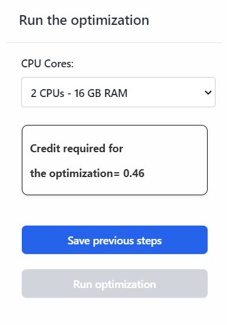
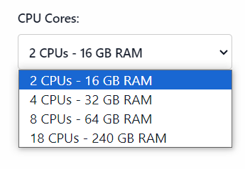
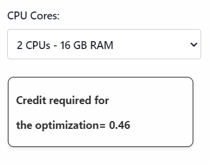
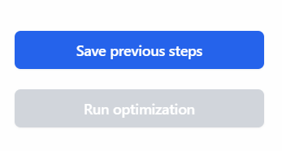

Run the Optimization
The "Run the Optimization" section allows users to configure and initiate the optimization process for their 3D modeling projects. This section includes options for selecting the computational resources and saving the current configuration before running the optimization.
Interface Overview
CPU Cores
This dropdown menu allows users to select the number of CPU cores and corresponding RAM to be used for the optimization process. The available options are:
- 2 CPUs - 16 GB RAM: Select this option for a moderate computational load.
- 4 CPUs - 32 GB RAM: Select this option for a higher computational load.
- 8 CPUs - 64 GB RAM: Select this option for an even higher computational load.
- 18 CPUs - 240 GB RAM: Select this option for the maximum computational load.
Choosing a higher number of CPU cores and more RAM will speed up the optimization process but may require more computational resources.
Credit Required for Optimization
- Credit Calculation: This field displays the amount of credit required to run the optimization based on the selected computational resources. The credit requirement will vary depending on the number of CPU cores and RAM selected.
Save Previous Steps & Run Optimization
-
Save Previous Steps: Click this button to save the current configuration and all previous steps before running the optimization. This ensures that all settings are stored and can be reviewed or modified later if needed.
-
Run Optimization: After saving the previous steps, this button will become active. Click this button to start the optimization process using the selected computational resources. The optimization process will use the saved configuration to optimize the 3D model according to the specified parameters.